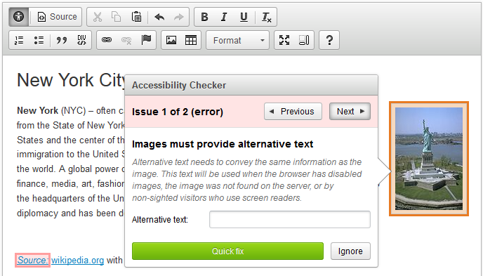
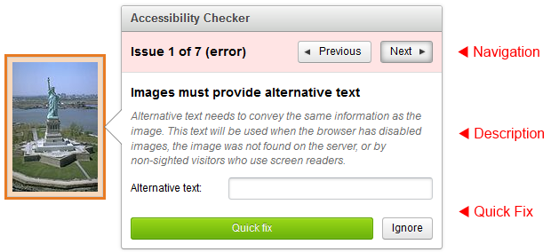
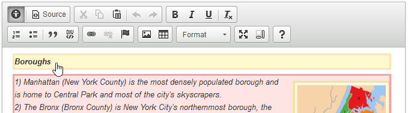
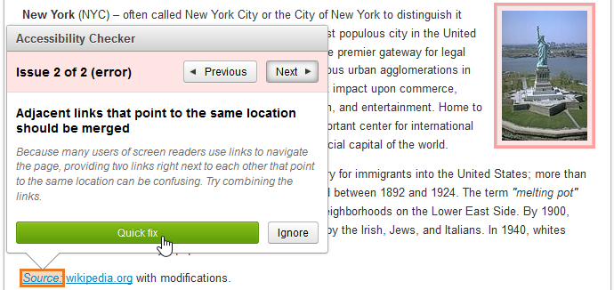
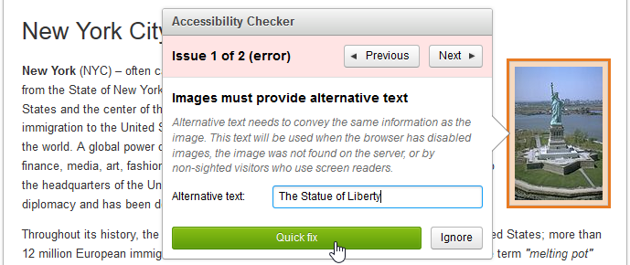
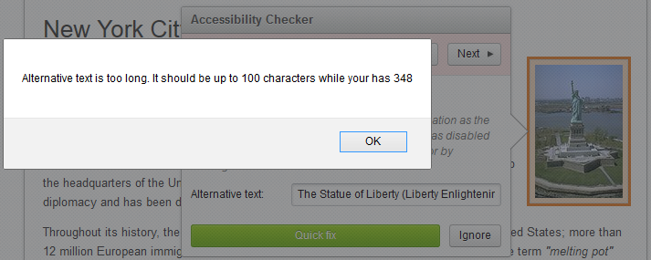
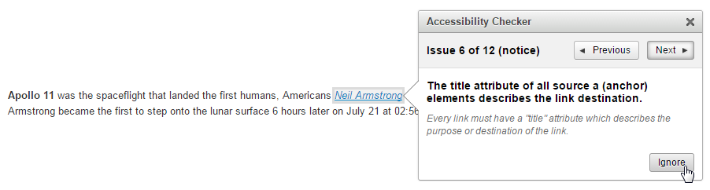
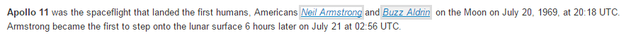
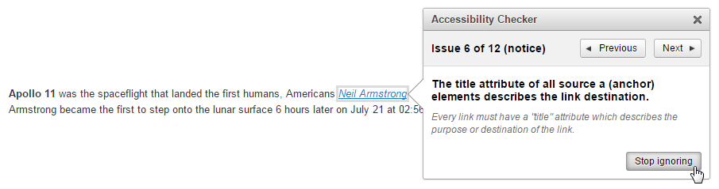
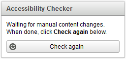

Managing Content Accessibility with Accessibility Checker
Managing Content Accessibility with Accessibility Checker
This feature is provided through optional plugins (Accessibility Checker and Balloon Panel) that are not included in the CKEditor presets available from the Download site and need to be added to your custom build with online builder.
Accessibility Checker is available under a GPL or commercial license. Contact us for more details.
Quail, the default accessibility tests library, requires jQuery 1.x or later to run. You thus need to add jQuery 1.x (or later) to any site that is going to use Accessibility Checker.
Accessibility Checker is an innovative solution that lets you inspect the accessibility level of content created in CKEditor and immediately solve any accessibility issues that are found.
It is built upon three key elements:
- User Interface optimized for quick problem solving.
- Flexibility allowing you to use the accessibility checking engine of your choice.
- Quick Fix feature letting you fix common problems fully automatically.
# Summary: How Does It Work?
A typical accessibility checking process can be simplified to the following three steps.
# Step One: Content Validation
Accessibility Checker inspects output HTML code against predefined patterns of common accessibility problems. For that purpose Accessibility Checker uses a dedicated accessibility checking engine.
The default checking engine is Quail, but you are free to integrate any other library you want — it can be written in JavaScript, PHP, Java, .NET or any other language of your choice.
# Step Two: Report Issues
Accessibility Checker will list all issues found and highlight them in the document. It will provide a more detailed description of what is wrong with each issue so the user can verify and solve the problem.
# Step Three: Fix the Issue
Fix the markup to make your content free from accessibility issues. Thanks to the Quick Fix feature correcting common problems is as easy as clicking a button. When there is no Quick Fix available, you can switch Accessibility Checker into listening mode and make necessary corrections to your content manually, following the checking engine recommendations provided in the panel.
# Running Accessibility Checker
You can enable Accessibility Checker by clicking the Check Accessibility ( ) toolbar button. Once the button is clicked, Accessibility Checker will perform the content checking process. Typically it takes a fraction of a second. Depending on the result, Accessibility Checker will switch to checking mode or inform you that the document contains no accessibility issues.
) toolbar button. Once the button is clicked, Accessibility Checker will perform the content checking process. Typically it takes a fraction of a second. Depending on the result, Accessibility Checker will switch to checking mode or inform you that the document contains no accessibility issues.
# Issues Found — Checking Mode
When Accessibility Checker finds some issues, it will display a panel containing the tools needed for understanding and solving the problem.

Accessibility problems are presented as one issue at a time, allowing you to iterate over the entire list. Issues can also be ignored (see Ignoring Issues). For more information about checking mode please refer to the Checking Mode section.
# No Issues
If no issues are found in the document, Accessibility Checker will inform you about it.

This means that your content is validated.
# What Exactly Are Issues?
An issue represents a single accessibility problem in your content, as defined by your checking engine. Issue are grouped into different types:
- Error – The checking engine is 100% certain that the highlighted element contains an accessibility issue.
- Warning – The checking engine discovered that there is a possibility of a given error, but it does not have a 100% certainty.
- Notice – The checking engine has no way to detect this issue, so it points an issue only as a notice and the user can verify if the content satisfies the given rule.
In checking mode the highlight color will slightly differ (ranging from red for an error through yellow for a warning to gray for a notice) in order to hint the issue type.
Refer to the Custom Issue Types in Accessibility Checker tutorial for information about adding your own issue types.
# Checking Mode
Checking mode is enabled when there is at least one issue in the editor content. It shows a panel containing all key information about the currently focused issue.
It is designed for:
- Quick problem identification (with a meaningful title, description, help links).
- Navigation over the detected issues.
- Fixing the problems, ideally without leaving the panel.
Checking mode will work on a single issue at a time, allowing you to iterate over all issues found in the document.
The following picture highlights the most important parts of the panel shown in the checking mode.

# Navigating over Issues
Multiple ways to go through issues are available.
# Navigation Buttons
Use the Previous or Next buttons in the Accessibility Checker panel to move between issues.

# Clicking a Selected Issue
Since issues are highlighted in the editor, you can click an issue with your mouse. It will focus the first issue within the selected element. The possibility to focus an issue is indicated by a hightlight and a cursor change.

# Using the Keyboard
You can also use the keyboard to move through issues. A few keyboard shortcuts were defined to make navigation easy and intuitive.
Please refer to the Keyboard Shortcuts section for a complete list of available keystrokes.
# Using Quick Fixes
Quick Fix is a powerful feature designed to solve issues as quickly as possible, without leaving the Accessibility Checker panel.
There are two Quick Fix types:
- Automatic – Does not require any user input at all to fix the problem.
- Semi-automatic – Requires the user to provide some information before applying the Quick Fix.
# Working with Quick Fixes
Depending on the Quick Fix type, two approaches are possible.
# Automatic Quick Fix
For automatic Quick Fixes the user’s job is to just press the Quick Fix button in the Accessibility Checker panel.

Once the button is pressed, the fix is applied. This will result in a change of the HTML source of your content.
# Semi-Automatic Quick Fix
A semi-automatic Quick Fix requires some action from the user, typically requested by a form text input in the Accessibility Checker panel. For example:

Initially this image has no alternative text so Quick Fix asks the user to provide it as it is unable to determine this automatically.
# User Input Validation
Quick Fixes are also smart enough to validate the user input data if needed.
For example, it is recommended that an alternative text for an image should be shorter than 100 characters. If the user enters a text that is longer than 100 characters into the “Alternative Text” field and tries to apply it with a Quick Fix, Accessibility Checker will raise an error warning the user that the text is too long.

# Adding Quick Fixes
Quick Fix feature was created with extensibility in mind, so it is very easy for a developer to add new, custom Quick Fixes to Accessibility Checker.
Refer to the Custom Quick Fixes in Accessibility Checker tutorial for information about adding your own Quick Fixes.
# Ignoring Issues
Issues reported by Accessibility Checker can also be ignored. This can be done by clicking the Ignore button for each selected issue in the Accessibility Checker panel.

If an issue is ignored, it will gain a very subtle highlight which no longer indicates the initial issue type, as shown below.

It is still possible to open Accessibility Checker on an ignored issue by clicking it, navigating to it with your keyboard or moving to it from the previous or next issue.
Once the issue is ignored you can also unset its ignore status by clicking the Stop ignoring button.

# Switching to Listening Mode
When you wish to introduce some manual changes to your content, Accessibility Checker will switch to listening mode, waiting for your changes to be done.
There are two ways of switching Accessibility Checker to listening mode after its initial activation:
- Clicking anywhere in the CKEditor content area.
- Pressing the listening mode keyboard shortcut.
# Listening Mode
Listening mode is enabled when you want to make a quick change to the document.
In listening mode Accessibility Checker minimizes itself and waits until you are finished editing your content. Listening mode will put the following indicator in the bottom right-hand corner of your browser:

When you are done with your changes, you can return to checking the content by clicking the Check again button.
# Keyboard Shortcuts
Accessibility Checker comes with good keyboard support. The following table describes default keystrokes and actions assigned to them.
# Keyboard Shortcuts for Windows / Linux
| Command | Keystroke | Restrictions |
|---|---|---|
| Open or close Accessibility Checker | Ctrl+Alt+E | |
| Next issue | Ctrl+E | Checking mode only |
| Previous issue | Ctrl+Shift+E | Checking mode only |
| Close Accessibility Checker | Esc | |
| Switch to listening mode | Shift+Esc | Checking mode only |
| Switch to checking mode | Shift+Esc | Listening mode only |
# Keyboard Shortcuts for Mac
| Command | Keystroke | Restrictions |
|---|---|---|
| Open or close Accessibility Checker | Command+Option+E | |
| Next issue | Command+E | Checking mode only |
| Previous issue | Command+Shift+E | Checking mode only |
| Close Accessibility Checker | Esc | |
| Switch to listening mode | Shift+Esc | Checking mode only |
| Switch to checking mode | Shift+Esc | Listening mode only |
Please note that the predefined keyboard shortcuts can be changed with the custom configuration.
# Accessibility Checker Demo
See the working “Accessibility Checker” sample where you can try how to detect and fix accessibility issues in your editor content.
# Related Features
Refer to the following resources for more information about accessibility in CKEditor:
- The Accessibility Support in CKEditor article explains CKEditor compliance with some well-known accessibility standards and gives an overview of available accessibility-related features.
- The Keyboard Shortcuts article lists all keyboard shortcuts supported in CKEditor.
- The Page Navigation Using the “Tab” Key article discusses how CKEditor participates in the page Tab order.
- The CKEditor Section 508 Compliance article describes CKEditor 4 compatibility with Section 508 Amendment to the Rehabilitation Act of 1973.
- The CKEditor WCAG 2.0 Compliance article describes CKEditor 4 compatibility with the Web Content Accessibility Guidelines (WCAG) 2.0 standard.
- The Custom Issue Types in Accessibility Checker article shows how to add custom issue types.
- The Custom Quick Fixes in Accessibility Checker article shows how to add custom Quick Fixes.